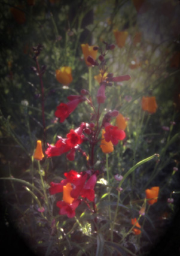

Floral Scenery. After passing the Customs House, you see there are various planters with trees and flowers along the walkway. A look closer reveals the beautiful flowers of the California Poppy and the red flower (name unknown) shown above. The flowers above are only a small showing of the beautiful fauna present around the Wharf and the Monterey Bay. The photograph was originally produced with late afternoon sun and a 35 mm camera using Provia slide film and a soft focus lens, shutter speed 125, F6.7. Photo copyright Andrea L. Arredondo, May 11, 2000.
Updated by Andrea Arredondo
5/19/00